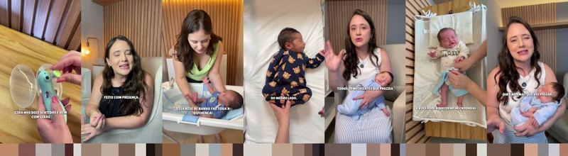
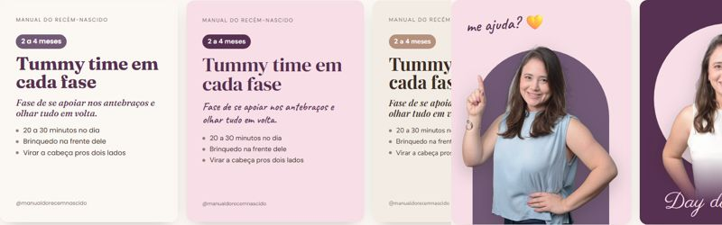
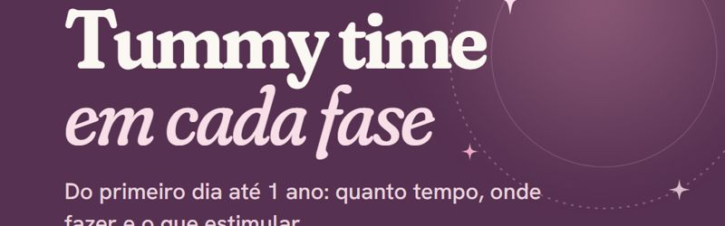

O material que a gente está usando pra montar os templates do Instagram: as referências de carrossel, as cores da marca e o banco de imagens.
Separados por categoria e estilo, com o texto de cada lâmina, o jeito de falar, o que copiar e os 5 moldes sugeridos.
Abrir →
A paleta do link da bio, as cores dos reels da Day dos últimos 30 dias e a paleta proposta pros templates.
Abrir →Grávidas e casais, bebês dormindo, Guia da Pega, Dream Baby Pocket e memes de maternidade. Cada um abre o original no Drive.
Abrir →
9 combinações de fonte nas cores do Manual, o ritmo dos fundos no carrossel e 4 acabamentos da foto da Day. Pra escolher e virar template.
Abrir →
O 1º carrossel no template do Manual: Fraunces + Hanken, fundos da paleta, vetores finos, bebê ilustrado e a Day no fechamento. Com a legenda pronta.
Abrir →